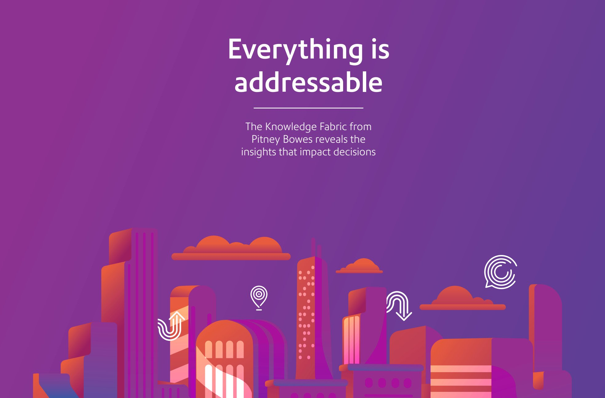

Video Demo · Agentic AI
Win/Loss Diagnostic Agent
A working demo of an agentic AI workflow built to analyze deal signals, identify win/loss patterns across the pipeline, and surface ICP drift before the next quarter of outbound runs.

Video · Cybersecurity and AI
AI as Co-Pilot in Cybersecurity Operations
How AI augments decision-making in security operations without replacing human judgment -- covering anomaly detection, faster response, and closing visibility gaps in legacy mainframe environments. Includes practical Zero Trust recommendations for federal agencies.

Video · AI and Public Sector
AI in Government
How federal agencies are adopting AI in mission-critical and regulated environments -- covering practical implementation, security considerations, and how legacy infrastructure fits into a modern AI strategy.

Whitepaper · Platform Positioning
The Knowledge Fabric -- Pitney Bowes
Platform narrative for a $400M+ data and software portfolio. Repositioned Pitney Bowes from a postage and mailing company to an address intelligence and data activation platform, framing a century of address data as a strategic enterprise asset.

Video · Platform Positioning
The Knowledge Fabric -- Pitney Bowes
Platform narrative for a $400M+ data and software portfolio. Repositioned Pitney Bowes from a postage and mailing company to an address intelligence and data activation platform, framing a century of address data as a strategic enterprise asset.

Slides · Platform Positioning
7 SOA Practices that Unlock Business Value
The accompanying slide deck -- seven concrete practices for extracting business value from SOA, built for a technical and executive audience across global enterprises. Covers SOA governance, channel integration, and composable application design.

Slides · Platform Positioning
API Management Demystified
Positioning framework for API management built for the webMethods platform at Software AG -- translating technical infrastructure into enterprise value. Covers the case for API governance, security, versioning, and operational oversight in a connected enterprise.

Video · Competitive Positioning
IBM WebSphere vs. Oracle WebLogic -- "Ask the Oracle"
Competitive positioning content for IBM's WebSphere Application Server portfolio -- taking on Oracle WebLogic directly with a format designed to land with technical buyers and architects evaluating middleware platforms.